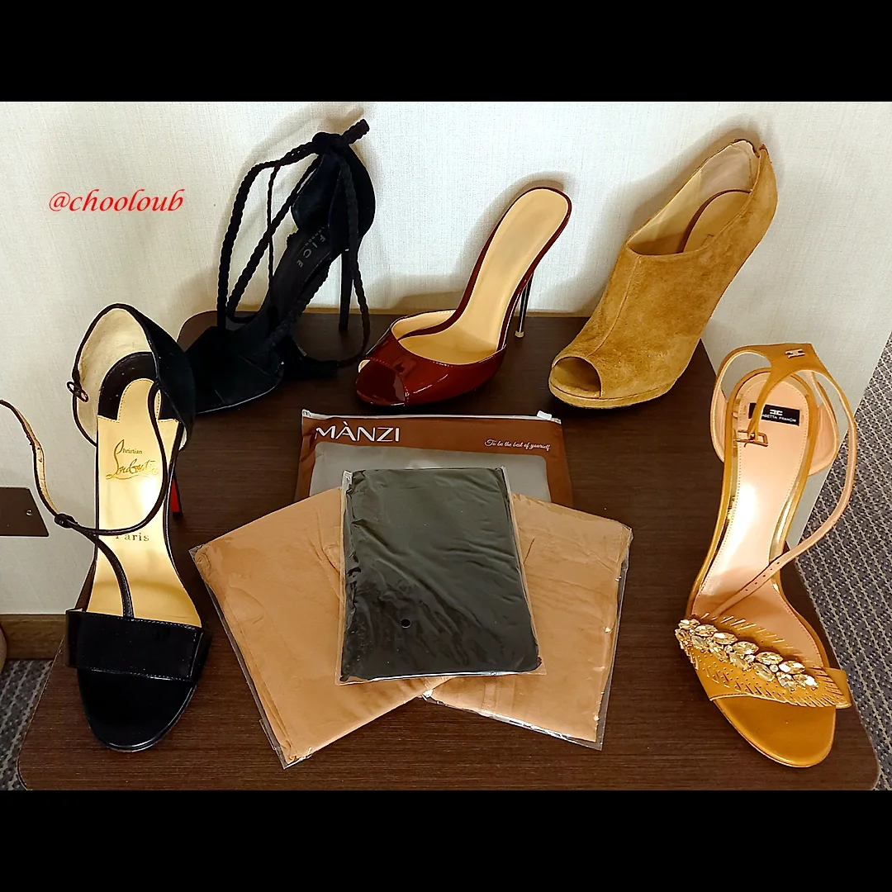
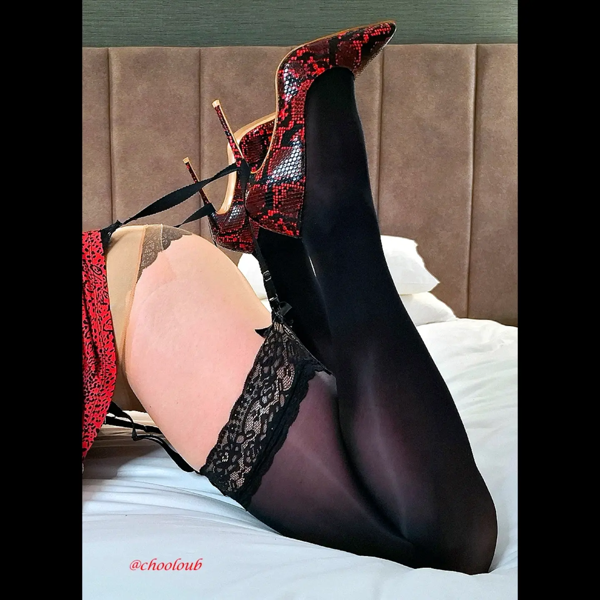
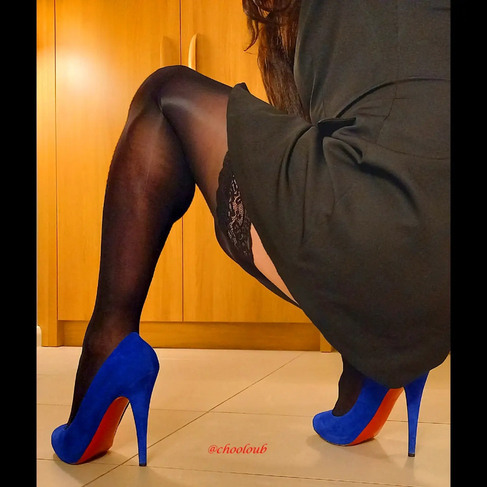
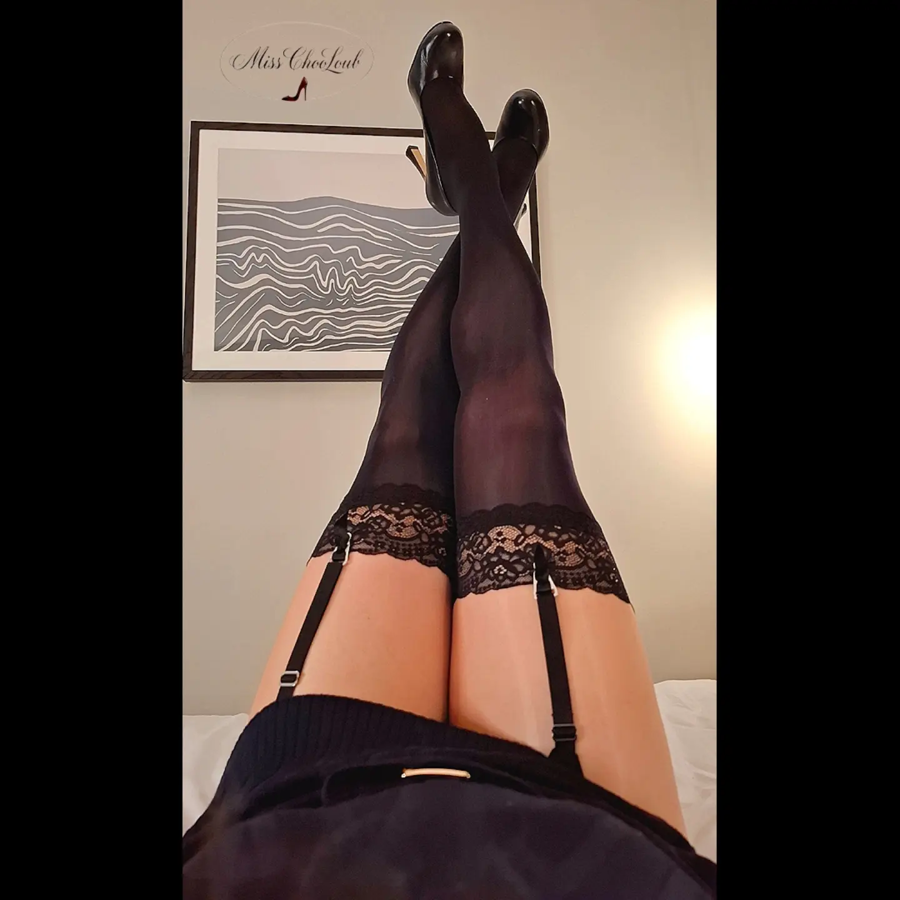
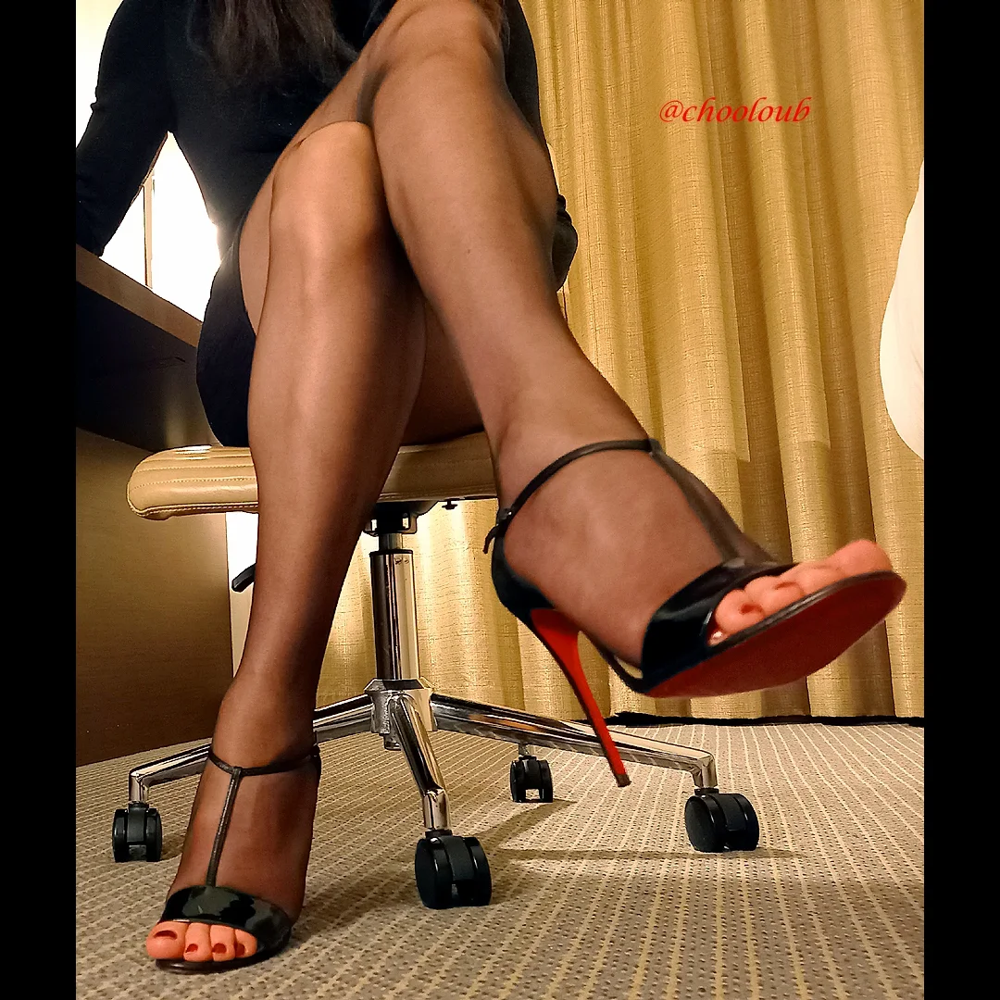
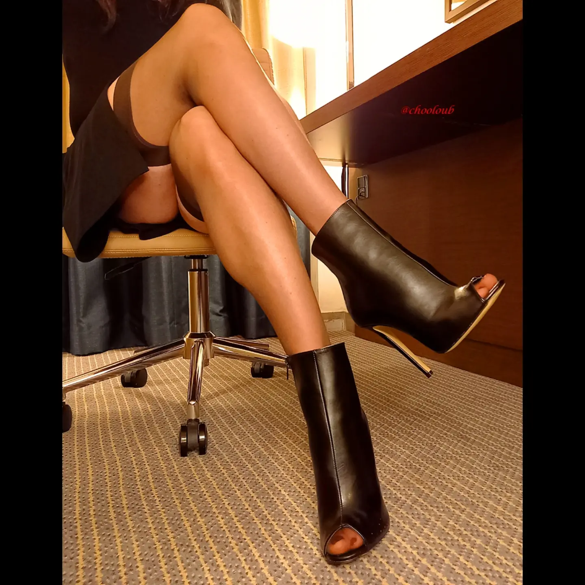
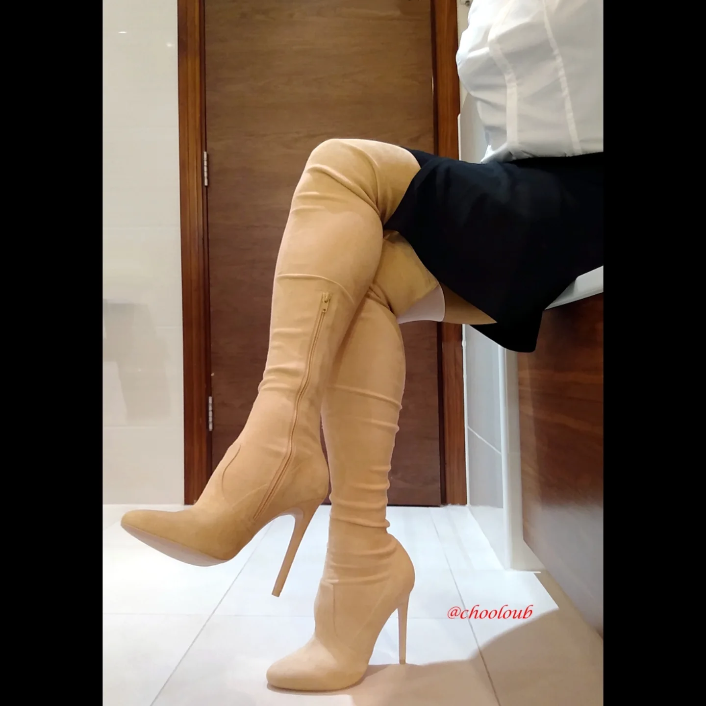

Lady Chooloub
Classy high heels
& nylons.
A polished study in silhouette, texture, and feminine detail.
Lady ChooloubClassy high heels & nylons
Elegance is in the details.The heel. The sheen. The attitude.Welcome to Lady Chooloub’s signature.
LADY CHOOLOUB
The image journal
A study in poise.
High heels, nylon texture, and a little theatre.







Official destinations
Choose your entrance.
Two places to follow Lady Chooloub’s world. No others.